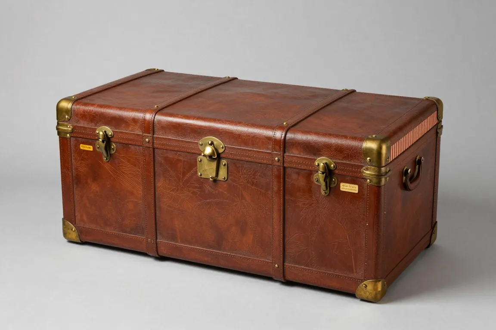

Reisekoffertene fra den franske malletieren. En lett trekonstruksjon bærer belagt lerret eller skinn, bundet med messing og tilpasset bruken. Det flate lokket stables i et skipslasterom eller på et tog.

Kjerneidé
En koffert er et lite rom som en reisende stoler på, og hver del av den tjener en bruk.
Designprinsipper
Gjør lokket flatt, slik at koffertene stables tre høyt i et lasterom eller en bagasjevogn.
Bygg rammen av poppeltre, 8 til 12 mm tykt, lett og sterkt.
Dekk rammen i lerret belagt med grå lakk, slik at det avviser regn.
Bind kantene og hjørnene med messing og fest dem med 4 til 6 mm spiker.
Monter en tumbler-lås og to eller fire hengsler i messing.
Tilpass innsiden til bruken: en garderobekoffert med stenger, en sengekoffert, en hattekoffert, en brett til tøy.
Fôr innsiden med stripet linstoff, og legg til initialer for hånd.
Gjenta en stripe, en rute eller et monogram på lerretet, slik at en bærer kjenner koffertene med ett blikk.